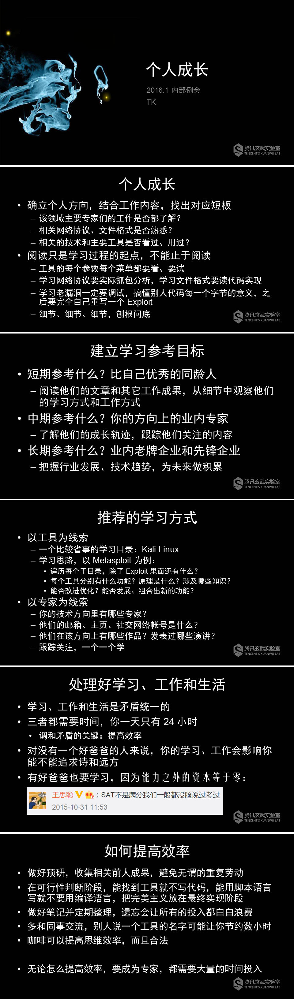
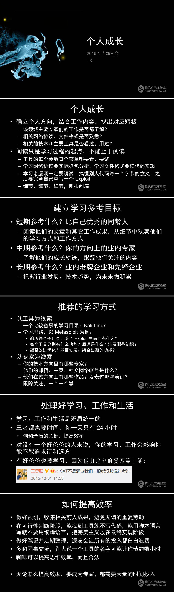

TK(tombkeeper)谈个人成长
一位老师问我当年自学时看的是什么书，想推荐给他的学生。十几年前国内安全方面的书不多，选择余地很小。而且我那时啥都不懂，对书也没什么鉴别能力，基本是看到就买，买来就学。所以我把在实验室内部给新同学们讲安全研究者个人成长的 PPT 发给了他，这对同学们来说可能比推荐几本书更有价值。

一位老师问我当年自学时看的是什么书，想推荐给他的学生。十几年前国内安全方面的书不多，选择余地很小。而且我那时啥都不懂，对书也没什么鉴别能力，基本是看到就买，买来就学。所以我把在实验室内部给新同学们讲安全研究者个人成长的 PPT 发给了他，这对同学们来说可能比推荐几本书更有价值。
